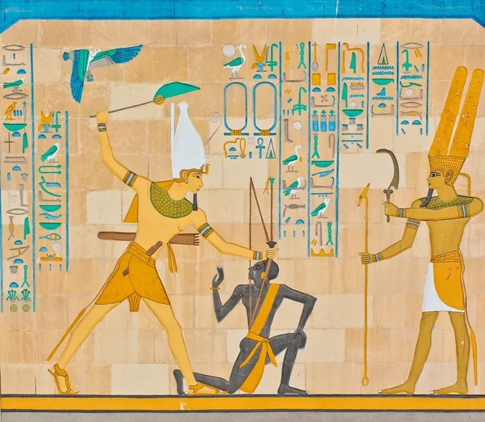

Historia:
Surgiu no período do novo império no Egito Antigo, por volta de 1600 a.C. Antes de se tornar umas das armas militares mais importantes para o exercício egípcio era uma ferramenta com fins para caça e ferramenta agrícola.Era crucial geralmente usada pela infantaria ou cavalaria, também foi retratada em outros artefatos ou em hieróglifos ,mostrando que possuía uma relevância e símbolo cultural. Igual demosntrado na imagem a seguir.
A Batalha de Kadesh foi uma batalha significativa em 1274 aC entre as forças egípcias lideradas por Ramsés II e as forças hititas lideradas por Muwatalli II. Embora nenhum registro histórico confiável indique o uso do khopesh, é possível que a arma tenha sido usada por soldados egípcios. Durante a batalha, o exército egípcio foi surpreendido por um relevo hitita, o que levou a um ataque frontal. Apesar do relevo, os egípcios conseguiram resistir e o confronto terminou em impasse. Ramsés II obteve uma vitória diplomática após negociações com o rei hitita, resultando em um tratado de paz entre os dois impérios.
A espada khopesh era uma arma comum no antigo exército egípcio, usada para combate corpo a corpo e exibindo seu design único e importância cultural. Seu legado permanece duradouro, inspirando fascínio e admiração em todo o mundo. Embora tenha sido destruído após a queda do Egito Antigo, seu design único influenciou a criação de outras curvas no Oriente Médio e continua sendo um símbolo de poder e domínio na cultura egípcia. A espada khopesh é frequentemente usada como inspiração para jogos, filmes e mídia, demonstrando seu impacto duradouro no imaginário popular.